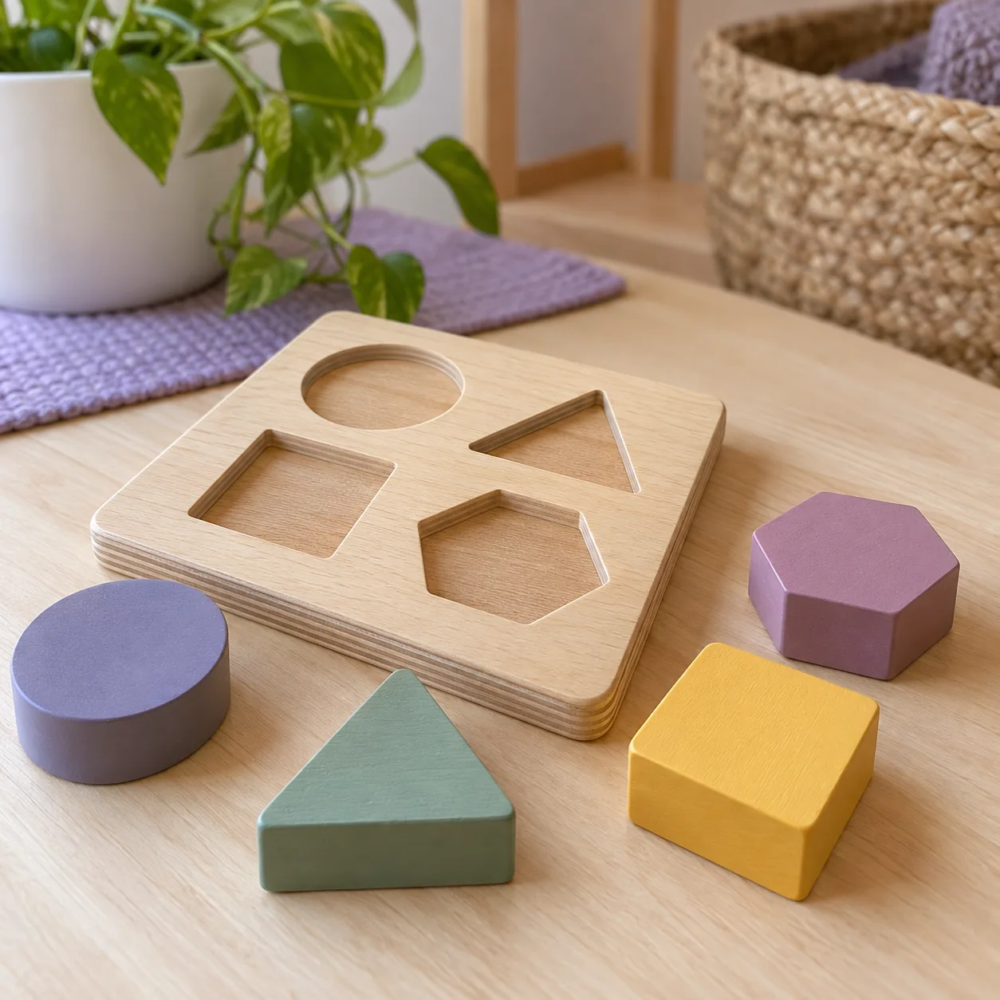
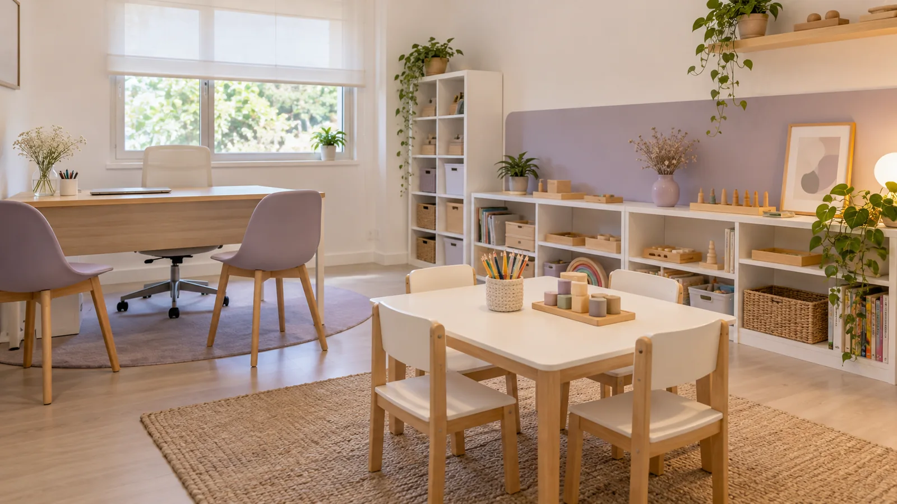
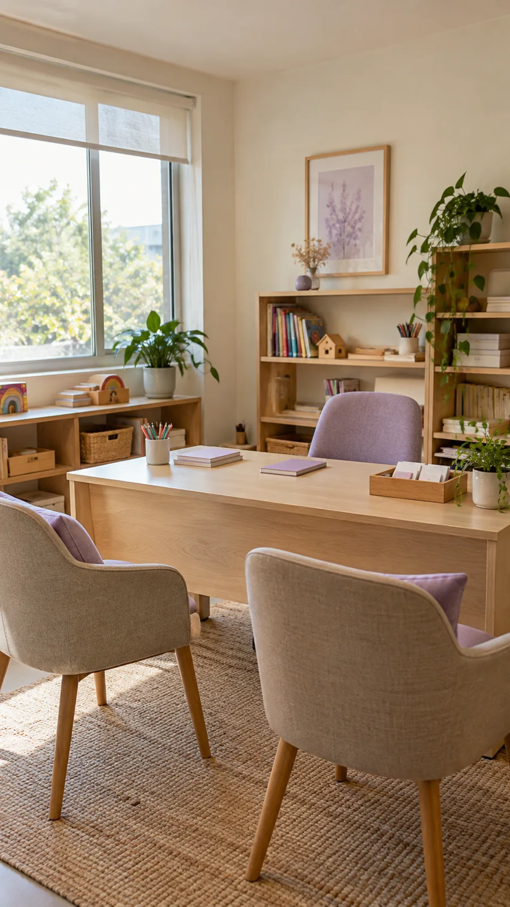
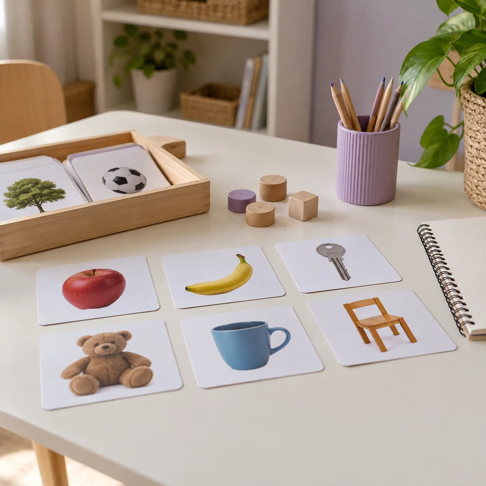
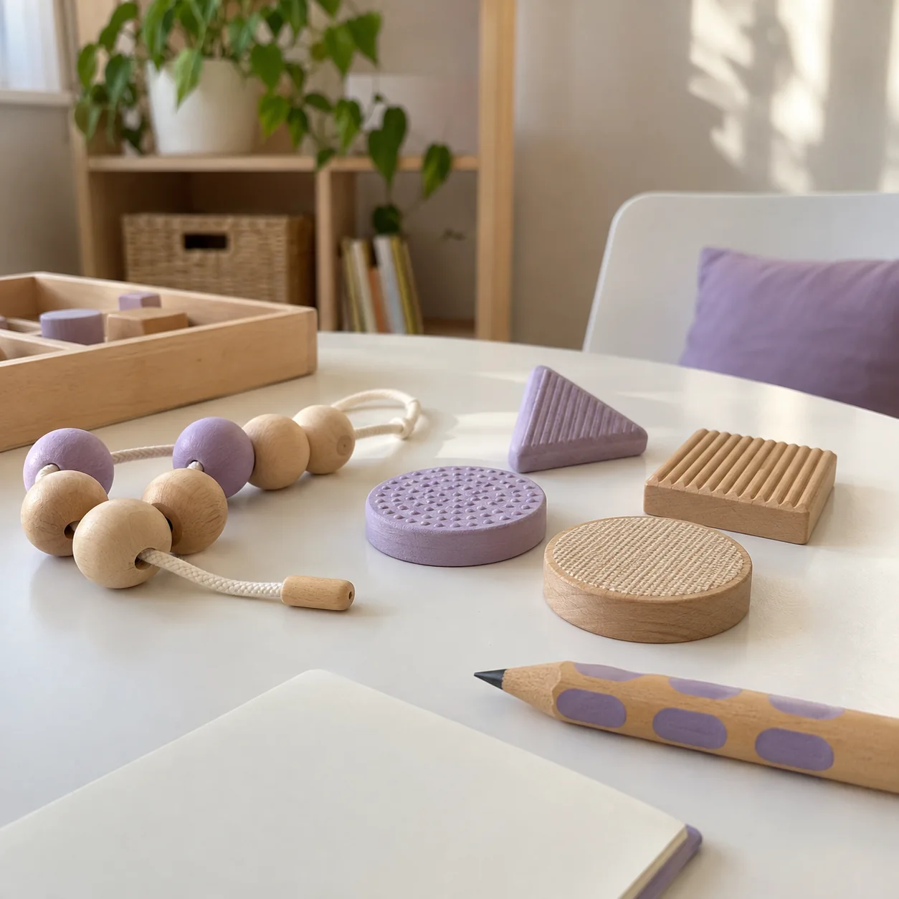
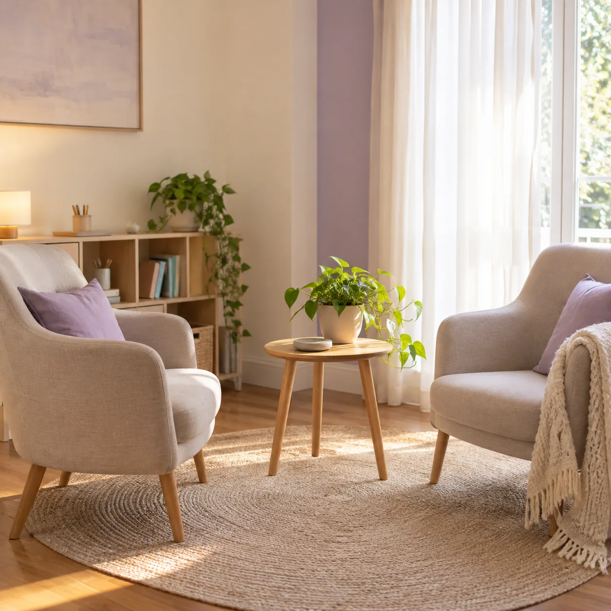
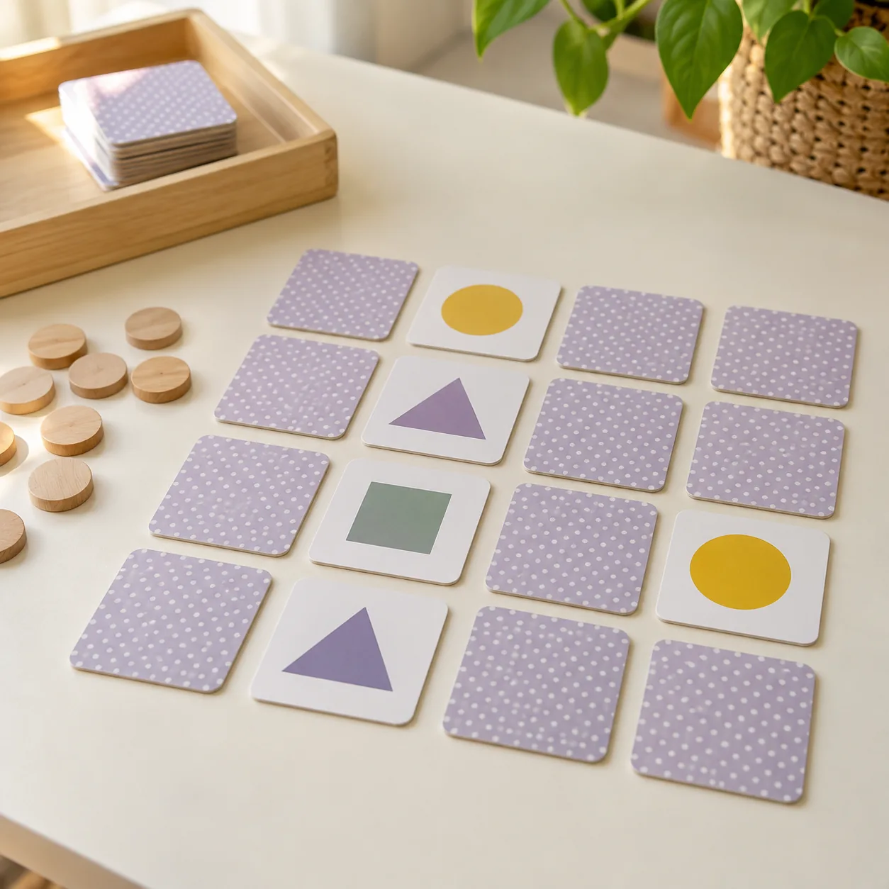
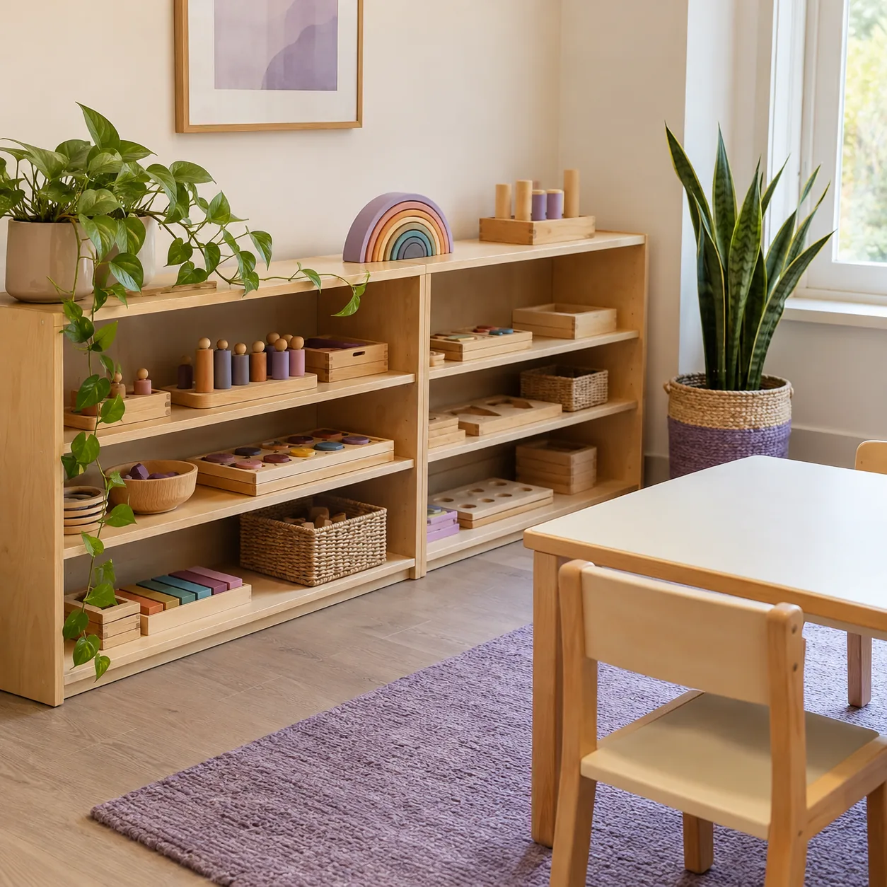

01 / EVALUACIÓN
Diagnóstico y valoraciones
Evaluaciones para comprender cada situación y orientar los próximos pasos.
PSICOPEDAGOGÍA · ABORDAJE INTERDISCIPLINARIO
Un espacio para escuchar, comprender y construir caminos posibles para cada persona.
Consultar por WhatsApp ↗

Un espacioEL ESPACIO
ACOMPAÑAR Espacio es un espacio interdisciplinario de psicopedagogía. Nos acercamos a cada recorrido con una mirada personalizada, atendiendo las necesidades y posibilidades de cada persona.
Trabajamos con discapacidad, obras sociales y atención particular. Podés escribirnos para contarnos tu situación y conocer las modalidades de atención.
Conocé cómo contactarnos ↗QUÉ HACEMOS
Propuestas de evaluación, tratamiento y orientación para acompañar cada etapa.

Evaluaciones para comprender cada situación y orientar los próximos pasos.

Tratamiento que acompaña procesos de aprendizaje, comunicación y desarrollo.
Un espacio para explorar intereses, posibilidades y decisiones futuras.

Propuestas de acompañamiento adaptadas a cada proceso.
MODALIDADES DE ATENCIÓN
Atendemos de forma particular y trabajamos con obras sociales. También brindamos atención con CUD. Consultanos por la documentación y las condiciones de cobertura para tu caso.

CÓMO EMPEZAR
Contanos qué necesitás y para quién es la consulta.
Conversamos sobre atención particular, obra social o CUD según corresponda.
Acordamos cómo seguir y la atención en el espacio.


ESTAMOS CERCA
Escribinos para consultar por los servicios y coordinar la atención.